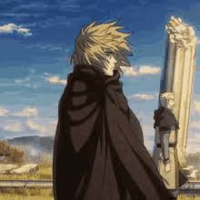
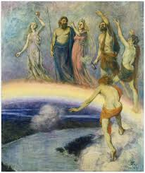

ᚨ Religião
O SERMÃO DO PADRE WILLIBALD E O PROBLEMA DO AMOR 'ÁGAPE'

O sermão do padre Willibald na segunda temporada de Vinland Saga é um dos momentos mais densos da obra, tanto filosófica quanto teologicamente. O ponto central se desencadeia quando o padre declara: “Eu não entendo o que é o amor.” Essa afirmação, dita por um religioso experiente, já estabelece o tom: o amor cristão não é tratado como algo simples, intuitivo ou sentimental. Pelo contrário — é um ideal quase impossível, que nem mesmo um sacerdote consegue compreender de forma plena. A partir dessa confissão, Willibald descreve que existem muitos tipos de amor, reconhecidos por todos os povos: o amor romântico, o amor de amizade, o amor pela terra e pelas posses. No entanto, ele destaca que todos esses pertencem ao plano humano e são motivados por desejo, necessidade ou reciprocidade. Mas o amor que Jesus prega nos Evangelhos — o amor que se torna obrigação moral para o cristão — é algo diferente. A obra sugere isso quando o padre afirma que o amor verdadeiro é algo que “não depende do que recebemos em troca”. É aqui que Yukimura introduz, de maneira sutil, a distinção clássica da teologia cristã entre eros, philia e ágape. O amor cristão é ágape: um amor incondicional, sacrificial e universal.
Martires em vinland saga.

Os mártires em Vinland Saga não são apenas figuras religiosas sacrificadas, mas um componente narrativo que revela a tensão entre fé, violência e dominação. A obra mostra cristãos crucificados principalmente na Inglaterra, vítimas da expansão viking e das guerras políticas. Essas cenas de crucificação não são meras referências históricas: elas carregam simbolismo profundo. Os corpos expostos ao longo das estradas representam a fragilidade da fé diante da brutalidade humana, mas também a resistência silenciosa daqueles que sofrem e suportam a dor sem reagir — algo muito próximo da concepção cristã de martírio como testemunho da fé. O anime mostra que o mártir é aquele que não nega sua crença, mesmo sob ameaça de morte, e que, ao morrer, oferece um tipo de mensagem moral mais poderosa do que qualquer discurso. Essas representações também funcionam como espelho para os próprios personagens principais. A exposição dos mártires nas cruzes provoca perguntas éticas tanto nos vikings quanto nos escravos. Para muitos nórdicos, o martírio cristão é incompreensível, porque sua cultura valoriza a resistência violenta, o contra-ataque e a busca da glória por meio da espada. Morrem, mas lutando. Já os cristãos que se deixam matar sem lutar são vistos com estranhamento — às vezes com desprezo, às vezes com medo, como se fossem pessoas que confiam em forças invisíveis que os vikings não entendem. Esse contraste revela o conflito espiritual mais amplo da obra: a ideia de que existem valores maiores do que a própria vida, e que sofrer injustamente também pode ser uma forma de força.
ALUCINAÇAO DE CANUTO.

A alucinação religiosa de Canuto em Vinland Saga representa o momento decisivo em que ele abandona sua antiga fragilidade e assume uma visão messiânica de si mesmo. A cena ocorre após o trauma da morte de Ragnar — a figura paterna que lhe dava estabilidade emocional — e funciona como catalisador de sua transformação. Diante da perda, Canuto confronta o sentido do sofrimento humano e questiona a justiça divina. É nesse estado de angústia que ele tem a visão de Deus, apresentada inicialmente como uma imagem luminosa e majestosa, mas que logo se revela severa e implacável. A própria construção visual dessa cena reforça que não se trata de uma revelação divina literal, mas de um colapso psicológico: luzes distorcidas, vozes reverberantes e a presença ao mesmo tempo atraente e ameaçadora de Deus apontam para uma mente fraturada pela dor. A figura divina que aparece para Canuto é inteiramente moldada por seus medos e pela teologia rígida da época. O Deus que ele vê não é um Deus de misericórdia, mas um juiz absoluto, uma autoridade cuja exigência é imutável e cujo poder julga tanto reis quanto mendigos. Isso ecoa a visão cristã medieval: Deus como Senhor dos exércitos, fonte de ordem e destino, legitimador da autoridade dos governantes. Na alucinação, Canuto entende que o mundo terreno é marcado pela corrupção e pela injustiça e que apenas impondo uma ordem superior — uma ordem “divina” — seria possível acabar com o sofrimento humano. Em suas palavras interiores, reforçadas pela visão, percebe-se a ideia de que “se Deus não intervém, então cabe ao rei ser a mão que realiza Sua vontade”. O que era dúvida se torna convicção, e o que era dor se transforma em propósito.
THORS DE 'TROLL'.

A relação entre Thors e o apelido “Troll” em Vinland Saga é profundamente simbólica e ajuda a entender sua posição única dentro do universo religioso e cultural da obra. Embora não seja apresentado como um homem explicitamente religioso, Thors incorpora valores éticos que se aproximam muito mais do cristianismo — especialmente do cristianismo primitivo — do que do paganismo guerreiro dos vikings. O apelido “Troll dos Jomsvikings”, portanto, funciona como um contraste entre como a sociedade o enxerga e como ele realmente vive; entre o mito que construíram ao seu respeito e o homem que ele se tornou. Ele é visto como uma criatura temível e sobre-humana, mas age com uma filosofia radicalmente pacífica e humanista, que rejeita a violência. Historicamente e mitologicamente, um troll na cultura nórdica é um ser monstruoso, poderoso, irracional, frequentemente associado à brutalidade e à força destrutiva da natureza. Chamar Thors de “Troll” é reconhecer sua força sobre-humana e sua habilidade quase mítica em batalha. Para os Jomsvikings, esse apelido não era insulto — era reverência. Significava que ele era mais máquina de guerra do que humano, alguém destinado a morrer gloriosamente, a servir Odin ao lado dos grandes guerreiros no Valhalla. Porém, esse apelido também revela o quanto Thors estava preso dentro da mentalidade religiosa e guerreira de sua época, mesmo quando já havia ultrapassado espiritualmente esse modo de viver.
JULGAMENTO FINAL.
A fala de Askeladd sobre o ano 1000 é uma das mais carregadas de simbolismo histórico e existencial em Vinland Saga. Ela aparece quando ele comenta, de maneira irônica e amarga, que os homens daquela época viviam com a impressão de que o mundo se aproximava de um fim — não necessariamente um apocalipse literal, mas um ponto de ruptura da história humana. Askeladd diz algo próximo de que “estamos no ano 1000, e dizem que o mundo logo vai acabar”. Sua fala mistura crenças populares da Europa medieval, mitologia nórdica e a percepção particular que ele tinha sobre a decadência humana e o colapso dos reinos. Historicamente, havia de fato no imaginário europeu a ideia de que o ano 1000 marcaria um ciclo importante, associado ao milenarismo cristão: uma expectativa de que Cristo retornaria, que os reinos seriam julgados e que a ordem do mundo seria transformada. Embora essa crença não tenha sido universal, o medo e a especulação eram comuns, especialmente em ambientes monásticos. Do lado nórdico, existia também a noção de Ragnarök, o fim do mundo marcado por guerra, destruição e renascimento. When Askeladd fala do “fim do mundo” no ano 1000, ele está unindo essas duas tradições de forma cínica, quase como se estivesse zombando dos temores religiosos dos europeus enquanto reconhece que, de fato, sua época vive uma convulsão social e espiritual. Mas o que torna essa fala poderosa é a interpretação que ela ganha dentro da obra: para Askeladd, o “fim” não é sobrenatural — é humano. Ele vê povos violentos destruindo outros povos, monarcas incompetentes conduzindo seus reinos ao caos, e a própria lógica da guerra corroendo qualquer dignidade possível. O “fim do mundo”, portanto, é a falência moral de sua era. Ele enxerga que o norte da Europa está num ponto de transição violento: cristianização avança, reinos caem, populações são dizimadas, escravos aumentam, e a antiga cultura guerreira começa a ruir. Tudo isso leva Askeladd a pensar que sua geração vive “num mundo que já morreu”, preso entre dois ciclos históricos.
VALHALLA EM VINLAND SAGA.
O Valhalla em Vinland Saga não é apenas uma referência mitológica: ele é um símbolo psicológico, religioso e cultural que molda profundamente o comportamento dos personagens e revela o choque entre a antiga mentalidade guerreira nórdica e a nova ética cristã que se espalhava pela Europa do ano 1000. A obra usa o conceito de Valhalla de forma crítica, mostrando como essa crença — tão central aos vikings — podia dar sentido à vida, mas também aprisioná-los num ciclo infinito de violência. No imaginário nórdico, Valhalla é o grande salão de Odin, onde guerreiros mortos em combate são recebidos como heróis e passam a eternidade lutando durante o dia e festejando à noite. Em Vinland Saga, essa crença aparece principalmente como força motivadora para os guerreiros. Para muitos deles, morrer gloriosamente era literalmente o único caminho para uma vida após a morte digna. Assim, quando combatem, não lutam apenas por território ou honra social — lutam para “ser vistos” por Odin. A obra retrata isso de forma crua: é uma religião construída sobre a glorificação da guerra, e muitos personagens, especialmente os jovens, são moldados desde cedo para acreditar que a violência é sinônimo de virtude. O momento em que Vinland Saga apresenta a visão de Valhalla de Thorfinn, durante seu colapso psicológico, é talvez a representação mais marcante e simbólica dessa crença. No mangá (e parcialmente sugerido no anime), Valhalla aparece como um campo de batalha caótico, infinito, onde guerreiros mutilados se levantam eternamente para continuar lutando, uma espécie de inferno mascarado de glória. A obra subverte totalmente a visão heroica do mito: o “paraíso dos guerreiros” é, na verdade, um redemoinho de carnificina sem sentido, uma metáfora para a vida que Thorfinn viveu até ali — uma existência de morte repetida, de ódio cíclico e de perda perpétua. A escolha estética e narrativa de mostrar Valhalla dessa forma desmonta o romantismo da mitologia nórdica e expõe o vazio espiritual do caminho da vingança.
VALQUIRIAS EM VINLAND SAGA.

Historicamente, as Valquírias são figuras da mitologia nórdica — espíritos femininos associados a Odin, responsáveis por escolher quais guerreiros morreriam em batalha e seriam conduzidos ao **Valhalla**. Nos poemas eddicos, são descritas como mulheres nobres, belas e terríveis ao mesmo tempo, cavalgando pelos céus ou pairando sobre os campos de guerra. Elas simbolizam tanto a glória guerreira quanto a inevitabilidade da morte, sendo intermediárias entre o mundo humano e o divino. Embora sua imagem tenha sido romantizada pela literatura posterior, na tradição original carregam um misto de sacralidade e violência, pois seu papel está diretamente ligado ao destino e ao sangue derramado. A presença delas reforçava a cosmovisão viking onde morrer lutando era o ápice da existência. Em Vinland Saga, esse mito histórico é reinterpretado de maneira crítica e psicológica. A obra não retrata as Valquírias como seres literais presentes no mundo físico, mas como uma manifestação simbólica da mentalidade guerreira que molda personagens como Thorfinn. A famosa visão das Valquírias no pesadelo de Thorfinn desconstrói completamente o ideal heroico: elas não aparecem como belas deusas, mas como figuras grotescas, famintas pelo massacre, coletoras de corpos para um Valhalla transformado em inferno. Com isso, a série usa a ideia histórica das Valquírias para expor a brutalidade real por trás da religião da guerra, revelando que o suposto “paraíso” do guerreiro é, na verdade, apenas a repetição eterna da violência. Essa interpretação conecta o mito ao drama humano da obra, mostrando como crenças glorificadas podem se tornar prisões psicológicas e espirituais.